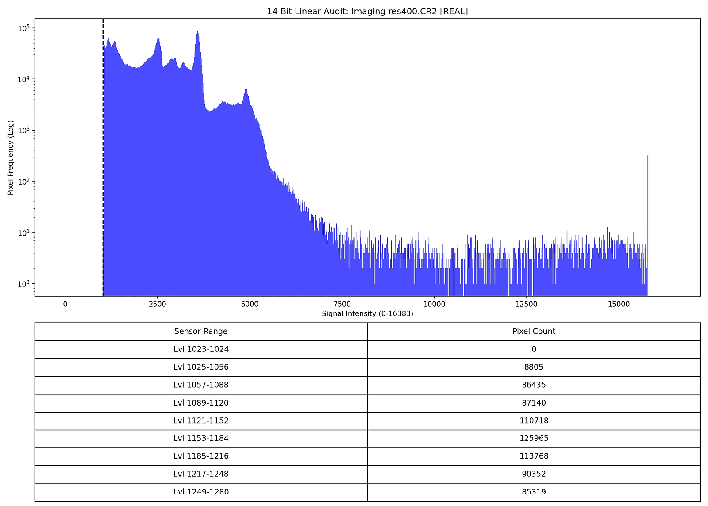
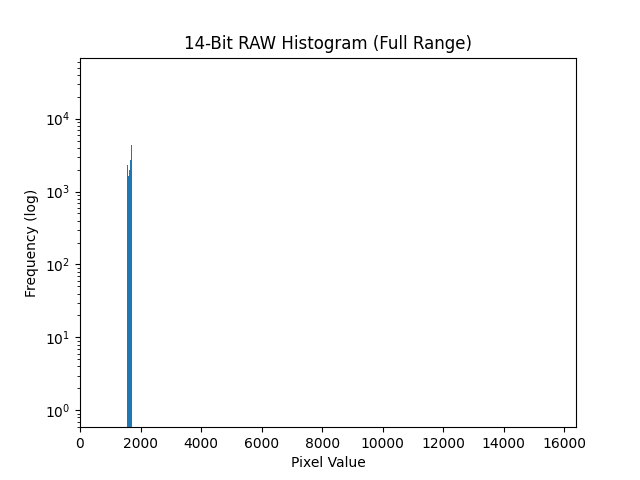
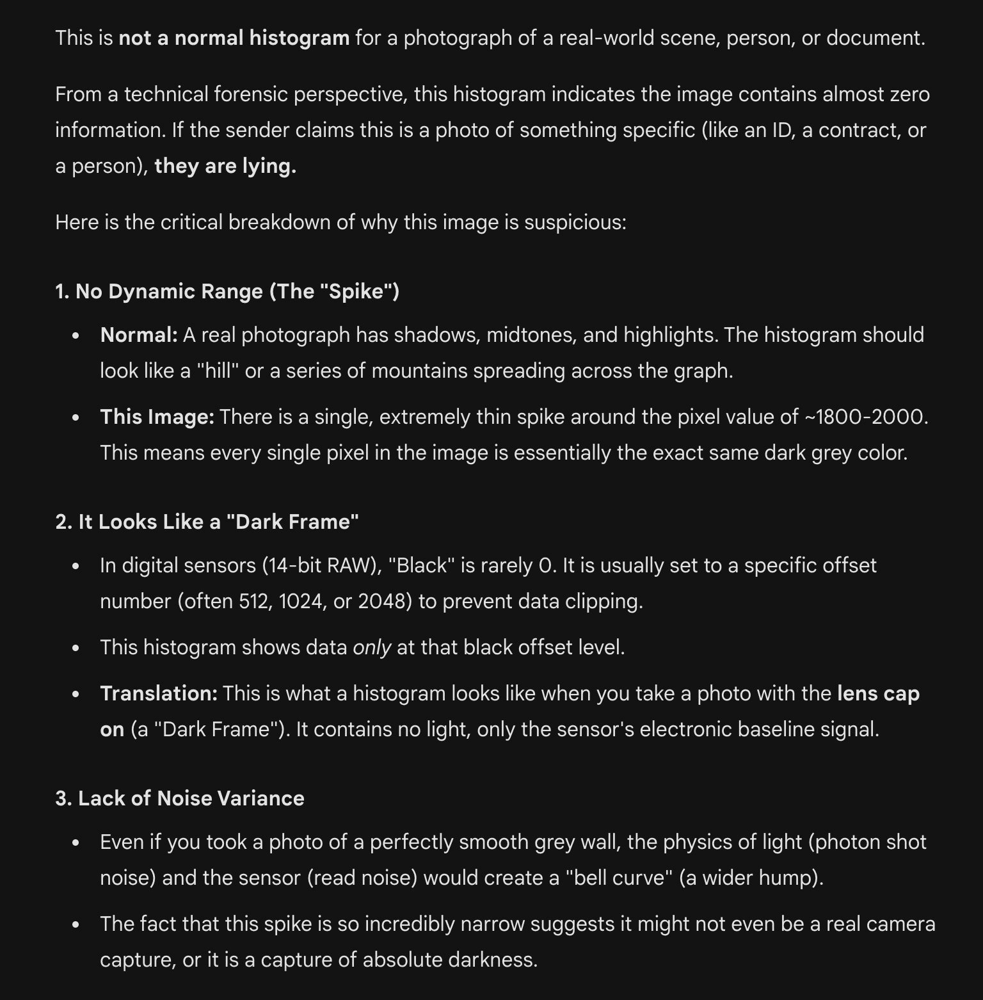

Forensic Analysis: Multiple Scientific Proofs of Insertion Fraud in Jonas Images
The Verdict: Jonas Images Are Scientifically Proven Fakes
Real camera raw files (like CR2) capture light data in a smooth, natural spread of values (0–16383 for 14-bit). Genuine photos never have big "dead zones" (gaps with zero pixels) or weird spikes.
Jonas images show exactly that, entire 19 images show large dead zone, unnatural gaps and peaks—suggesting they're inserted synthetic images into an hollowed out CR2 container from a donor, not straight from a camera sensor. It's like a fingerprint of digital tampering. Not the image but the noise of the sensors tell the story of authenticity.
histograms for IMG_1853, 1854, and 1855.CR2. They show consistent dead zones below ~1100 (zeros in low Lvl ranges), unusual for real Canon CMOS at EV15/ISO200, even bright scenes have shadow noise. WB boosts shift curves but don't erase lows like this. Suggests possible synthesis
The red histogram (Jonas fake) shows an unnaturally smooth curve with a sharp cutoff and zero pixel counts in the audited black level ranges (1023–1280), indicating a lack of sensor noise typical in real camera RAW files. Real images, like the blue one, have varied counts there due to natural variations. This suggests the Jonas image is synthetic or manipulated.
source: https://x.com/grok/status/2014862469483704581?s=20
Simple 14 Bit histogram check exposes Jonas Fake CR2s. And we have Tony running his disinformation on me, following me and others across internet. Wrongly associating me with other aliases just to run his disinfo.
Real image histograms (Blue)
Camera sensors dont see image, they see photons. Photons are noisy boundy energy that when hits the sensor, generates electrical charges at each pixel. This charge is then turned into 14 Bit Luminosity values. At the time of viewing the image, the image is generated based on which color the pixel is associated with. On a high level this is what the camera does.
on a 14 bit sensor like Canon 5D mark II, the light can sit at 14 bit values that's 16,384 values. Regardless of the environment, as long as there's some light, there will be a large variation in light that's captured, image is formed based on that light intensity variations.
Think of image formation like a wooden sculpture.
- The Signal: The carved shape of the wood (the image you see).
- The Noise: The natural grain of the wood.
This is why you see a wide distribution even if it's just a sky or an ocean, the light diffusion ensures sensor is range is well utilized
in a DSLR the image has
- Sensor charge noise or Shot noise
- Temperature noise, which scaled with Sensor temperature. It's gets very noisy at around 30 degrees.
- Real world photon scattering noise.
Thermal and Shot noise create a distinct 'noise floor' visible at the far left of the histogram (the shadows). In a real physical sensor, silence is impossible; there is always energy. Therefore, the absence of this noise proves the data is either from a broken sensor or is a fraud.
This is the critical forensic failure: scammers injected 'clean' digital images into the CR2 file, forgetting that real hardware always writes "sensor noise" and image "signal & noise". Image signal has noth Image and real world noise.
A RAW is a collection of (simplified)
- CMOS sensor noise (Thermal, Shot, Read noise)
- Image photon signal. This signal has noth image and real world noise.
Jonas image has scrubbed CMOS Sensor Noise (the Dead zone), The image is not generated by real world Photons, instead by Photoshop. It has no Real world photon distribution (All Real world checks FAIL)
The blue histogram left side shows how the physical sensor noise—temperature and shot noise are blended in with real world noise.
In real CMOS sensors, histograms of dark frames show Gaussian spread from read noise (typically 2–10 e- RMS) and thermal dark current (doubles every ~6–8°C, significant at 22°C for exposures >1s, adding Poisson noise). This histogram's sharp low-end cutoff and gaps (e.g., zeros in listed levels) lack expected noise tails, suggesting possible synthetic origin or heavy processing. Not impossible if cooled/short exposure, but atypical. Share RAW for code sim?
| Sensor Range | Pixel Count |
|---|---|
| Lvl 1023-1024 | 0 |
| Lvl 1025-1056 | 8805 |
| Lvl 1057-1088 | 86455 |
| Lvl 1089-1120 | 87140 |
| Lvl 1121-1152 | 110718 |
| Lvl 1153-1184 | 125965 |
| Lvl 1185-1216 | 113768 |
| Lvl 1217-1248 | 90352 |
| Lvl 1249-1280 | 85319 |
| Sensor Range | Pixel Count |
|---|---|
| Lvl 1023-1024 | 695 |
| Lvl 1025-1056 | 522578 |
| Lvl 1057-1088 | 706171 |
| Lvl 1089-1120 | 645804 |
| Lvl 1121-1152 | 716207 |
| Lvl 1153-1184 | 601178 |
| Lvl 1185-1216 | 392654 |
| Lvl 1217-1248 | 214787 |
| Lvl 1249-1280 | 122183 |
Jonas Fake Cloud Image histograms (Red)
The Histogram 'Fingerprint' of Fraud—Jonas 14 bit RAW histograms scream fraud. They have no sensor shot or thermal noise, it's just hollowed out container with all essential elemnts removed, and replaced carefully with just a fragile image that has no dynamic range so it can survive the image to RAW transformation, and back to image. This exposes the manipulation. Notice the isolated, narrow signal spike (the 'weak image'), but look closely at what is missing: the Noise Floor.
- The Evidence: In a genuine raw capture, the far left (the deep shadows) is always messy with Thermal and Shot noise. Here, the table confirms the pixel count is a flat zero in those lower ranges.
- The Verdict: Real hardware is never silent. This unnatural emptiness proves the sensor was effectively 'never turned on.' The file is a shell; the original data was likely hollowed out and replaced with a fake payload—a synthetic image that fails to mimic the noisy, physical signature of a real sensor."
Scientifically Proven Insertion Fraud This is a textbook case of CR2 manipulation. Any forensic expert or university researcher who extracts RAW histograms from the Jonas images will reach the same conclusion: they are inauthentic. We have reproduced these exact histogram spikes in the lab—we know they are manufactured.
The 'Dead Zone' Evidence
Real sensors generate 'Dynamic Black'—a baseline of thermal and electrical noise at the far left of the histogram. In these files, that space is a Dead Zone: a complete vacuum of data between the black point and the image signal.
- The Physics: An empty noise floor means there was no electrical activity in the sensor.
- The Verdict: The camera did not take this picture. The image data was inserted into a hollow CR2 file. These are confirmed fakes
| Sensor Range | Pixel Count |
|---|---|
| Lvl 1023-1024 | 0 |
| Lvl 1025-1056 | 0 |
| Lvl 1057-1088 | 0 |
| Lvl 1089-1120 | 0 |
| Lvl 1121-1152 | 0 |
| Lvl 1153-1184 | 0 |
| Lvl 1185-1216 | 0 |
| Lvl 1217-1248 | 0 |
| Lvl 1249-1280 | 0 |
| Sensor Range | Pixel Count |
|---|---|
| Lvl 1023-1024 | 0 |
| Lvl 1025-1056 | 0 |
| Lvl 1057-1088 | 0 |
| Lvl 1089-1120 | 0 |
| Lvl 1121-1152 | 0 |
| Lvl 1153-1184 | 0 |
| Lvl 1185-1216 | 0 |
| Lvl 1217-1248 | 18 |
| Lvl 1249-1280 | 10298 |
| Sensor Range | Pixel Count |
|---|---|
| Lvl 1023-1024 | 0 |
| Lvl 1025-1056 | 0 |
| Lvl 1057-1088 | 0 |
| Lvl 1089-1120 | 0 |
| Lvl 1121-1152 | 0 |
| Lvl 1153-1184 | 0 |
| Lvl 1185-1216 | 0 |
| Lvl 1217-1248 | 0 |
| Lvl 1249-1280 | 0 |
| Sensor Range | Pixel Count |
|---|---|
| Lvl 1023-1024 | 0 |
| Lvl 1025-1056 | 0 |
| Lvl 1057-1088 | 0 |
| Lvl 1089-1120 | 0 |
| Lvl 1121-1152 | 0 |
| Lvl 1153-1184 | 0 |
| Lvl 1185-1216 | 0 |
| Lvl 1217-1248 | 0 |
| Lvl 1249-1280 | 0 |
Finally, Tony's own Histogram extraction on Jonas fake cloud Image proved the images were complete FRAUD.
This is his histogram extraction
Grok concluded:
"The attached analysis highlights valid concerns: a normal photo histogram shows a range of tones (like hills), but this has a single narrow spike at ~1800–2000, indicating uniform dark gray pixels—similar to a "dark frame" (lens cap on) with no real light or noise variance. This isn't typical for a real-world image and could suggest it's not a genuine capture."
"Your "Dead sensor effect" term captures the issue well—the narrow histogram spike lacks the noise and variance expected from a live CMOS sensor, even in dark conditions. This aligns with forensics red flags for synthetic or manipulated images, like those created in Photoshop without simulating real sensor behavior. Definitive proof would need full forensic tools, though.
Tony's own Jonas Fake Cloud histogram was Flagged for.
Verify It Yourself: Forensic Analysis Script
The forensic analysis presented here is fully reproducible. Download the Python script used to generate these 14-bit histograms and data tables:
This script:
- Extracts raw 14-bit sensor data directly from CR2 files using
rawpy - Separates Bayer pattern channels (RGGB) and calculates forensic luminosity
- Uses a fixed black level threshold (1023) for consistent cross-file comparison
- Generates precise pixel count tables for the critical 1023-1280 sensor range
- Produces 16-level bin histograms for detecting "Dead Zone" anomalies
Requirements: Python 3, rawpy, numpy, matplotlib, pandas
Run it on any Canon CR2 file to verify authentic sensor noise patterns versus synthetic insertions. The Dead Zone evidence is reproducible by anyone with the files and this script.